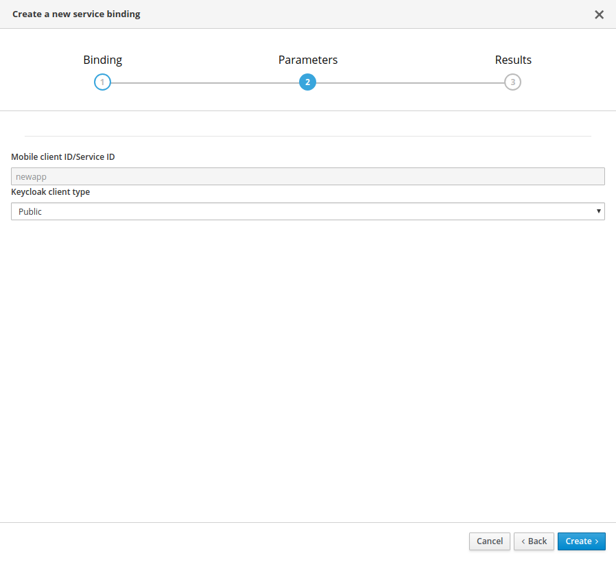

Using the Mobile Metrics Mobile Service
- Setting Up the Mobile Metrics Service
- Configuring your development environment for the Mobile Metrics Service
- Downloading the Configuration File
- Setting up Mobile Metrics service SDK
- Analyzing App Usage
- Monitoring the Identity Management Service
- Monitoring a Voyager Server Application
- Viewing Mobile Metrics Service Dashboards
The Mobile Metrics service allows you to gather metrics on mobile apps, device versions, device security checks and back-end mobile service usage.
-
Monitor usage by version of mobile app, platform and SDK
-
Monitor interactions with the Identity Management service
Identity management is monitored by the Mobile Metrics Service when it is provisioned. No configuration is needed.
-
You have provisioned Mobile Developer Console as described in Provisioning Mobile Developer Console.
Setting Up the Mobile Metrics Service
Provisioning the Mobile Metrics Service
This section describes how to set up the Mobile Metrics Mobile Service.
-
You have logged into the OpenShift console and the Mobile Developer Console.
-
Log into the OpenShift console.
-
Create a new project or choose an existing project.
-
Click Add to Project and choose Browse Catalog from the options.
You can filter the catalog items to only show mobile specific items by clicking the Mobile tab.
-
Click Services and choose the service.

-
Follow the wizard for provisioning that service.
If prompted to Create a Binding, choose Do not bind at this time When provisioning the service, you are prompted to set the following:
Table 1. Configuration Field Description Grafana Storage Size (Gb)
Size of persistent volume for Grafana (default value is recommended)
Prometheus Storage Size (Gb)
Size of persistent volume for Prometheus (default value is recommended)
Postgres Storage Size (Gb)
Size of persistent volume for Postgres (default value is recommended)
Postgres User
User name that will be used to connect to postgres ('user' will be used if blank)
Postgres Password
Password to connect to Postgres (generated if blank)
If you choose to generate the Postgres password, you can later retrieve the password using:
$ oc describe dc postgres-metrics -n <myproject> | grep POSTGRESQL_PASSWORD
Once the wizard steps are completed, navigate to the Project Overview in OpenShift to see the newly provisioned service. Provisioning a service may take some time.
Binding a Mobile App with the Mobile Metrics Service
To use mobile services, you must represent your mobile app in Mobile Developer Console, and that app must be associated with the mobile service. This association is called binding and it is necessary for your mobile app to use that service.
This section describes how to set up the Mobile Metrics service.
-
You have created a Mobile App.
-
Launch Mobile Developer Console.
-
Click on the Mobile App on the Overview screen.
-
Navigate to Mobile Services tab.

It is possible to bind a Mobile App with a mobile service in the OpenShift console, however such bindings are not valid for the purposes of this procedure. -
Click Bind to App for Mobile Metrics.
-
Fill out the binding parameters required by the Mobile Metrics Service.
Use Publicwhen binding a Mobile App to Mobile Metrics. When binding mobile services to each other, useBearer.
The service will now be expandable, details about the service can be viewed.

Downloading the Configuration File
The mobile-services.json file provides the information for your mobile app to communicate with services.
After you change any configuration in the Mobile Developer Console, it is important to update that file in your IDE.
-
The configuration of your Mobile App in Mobile Developer Console is up-to-date.
-
You have set up your mobile app development environment.
-
Open your Mobile App in Mobile Developer Console.
-
Copy the
mobile-services.jsonconfiguration to your clipboard. -
Save the contents of the clipboard to a new file called
mobile-services.json.The mobile-services.jsonfile is the link between your provisioned services on OpenShift and the mobile app you are developing. This file provides all required configuration to initialise the various SDKs and get them hooked up/connected to the back-end services. -
Move mobile-services.json to the following location in your application project:
Setting up Mobile Metrics service SDK
This guide will help you to set up the Mobile Metrics service SDK in your App. Metrics is included in all SDK modules, if you already use a component from the AeroGear SDK in your app, you may skip this step. Otherwise, install the core package by following the next steps depending on your platform:
Add the following dependency in your app’s build.gradle:
dependencies {
implementation 'org.aerogear:android-core:2.0.0'
}-
Add the dependency to your Podfile
target '[TARGET NAME]' do pod 'AGSCore', '2.0.0' end -
Update the dependencies by running in your terminal
$ pod install
-
Install the following package:
$ npm install --save @aerogear/core -
Install
cordova-plugin-aerogear-metrics:$ cordova plugin add @aerogear/cordova-plugin-aerogear-metrics
-
Install NuGet
-
Install the AeroGear Core package
$ dotnet add package AeroGear.Mobile.Core --version 2.0.0 -
Install the specific packages for Android:
$ dotnet add package AeroGear.Mobile.Core.Platform.Android --version 2.0.0And for iOS:
$ dotnet add package AeroGear.Mobile.Core.Platform.iOS --version 2.0.0
Analyzing App Usage
This guide shows how to use app metrics to provide rich visualizations regarding app usage that can then drive development planning, for example, when the support for version x.y of app should end.
Viewing Dashboards
There are many visualisations available in the default dashboards in Grafana. There are 2 dashboards where App Metrics data is shown:
-
Mobile Service Dashboard (Summary data in the 'Mobile App Metrics' section)
-
Mobile App Metrics Dashboard
In general, the summary data that is visible on the 'Mobile Services' Dashboard is also available on the 'Mobile App Metrics' dashboard, but in more detail.
Analyzing unique clients
Every metric event has a unique client identifier associated with it. This unique client identifier is generated the first time an App is started. It is worth noting this identifier will be regenerated if a user re-installs an App. The total number of unique clients for a given time shows how many users launched an App at least once. This can be useful as a gauge on how many active App users there currently are. The time range is an important factor when viewing the number of unique clients. Viewing unique clients for the last year gives a very different insight than for the last week. In Grafana, the time range can be changed in the top right of the Dashboard view.
Analyzing App launches
An App launch is a metric event that occurs when an App is launched on a device. The total number of App launches for a given time shows how many times an App was launched in that time, regardless of if it was the same device or different devices. It can be useful as a gauge on how much activity the App has. However, as it doesn’t take into account multiple launches from the same device, it isn’t useful as a gauge for 'stickiness' of the App.
Analyzing unique clients per App
Every metric event has an App identifier associated with it. An App identifier uniquely identifies an App. It is bundled with the App binary. There can be more than 1 App (each with a different App identifier) sending metrics events to the same Metrics Service. For example, there might be an Admin Portal App and a Field Worker App both using the same back-end services and same Mobile Metrics Service. The number of unique clients per App gives a breakdown of all users by the App they are using. However, if you only have 1 App there is no difference between the number of unique clients and the number of unique clients per App.
Analyzing unique clients per platform
Every metric event has the platform associated with it. An example of a platform is Android or iOS. This can be useful for making decisions about which platform to put effort into. However, if all your Apps are on a single platform, there is no difference between the number of unique clients and the number of unique clients per platform.
Analyzing unique clients per sdk version
Every metric event has the AeroGear sdk version associated with it. This can be useful for making decisions about what features to deprecate or drop support for, or applying backwards incompatible server changes/updates. This metric will be more valuable as more versions of an App (with different sdk versions) are published.
Analyzing unique clients per app version
Every metric event has the App version associated with it. The App version is set by the developer. Like the sdk version, this can be useful for making decisions about what features to deprecate or drop support for, or applying backwards incompatible server changes/updates. It can also be useful to see the uptake rate of newly published versions of an App.
Related Information
See Grafana documentation for more information on the following topics:
Monitoring the Identity Management Service
After the Mobile Metrics Service (includes Grafana for visualization and the Prometheus monitoring system) and Identity Management Service are provisioned, you should be able to see the "Keycloak Metrics" in the list of available dashboards.
-
The Mobile Metrics Service and Identity Management Service must be provisioned in the same OpenShift project to access data.
-
Navigate to Grafana.
-
Select Keycloak Metrics.
Additional resources
Dashboard panel descriptions
The Keycloak dashboard consists of several panels which give you an overview of the specific events, such as the number of registered users, memory usage etc.
Below you will find a detailed description of each panel and its values.
Singlestat panels show you the main summary of a single data series.
-
Total Registrations: Total number of registered (non-admin) users. This number comprises all successful registrations made via various providers, e.g. Keycloak, Github, Facebook etc.
-
Total Logins: Total number of successful logins (only non-admin users) over all providers.
-
Total Login Errors: Total number of failed login attempts.
-
Current Memory: The amount of memory currently used by the Identity Management Service
Used to show how certain values change over time, e.g. the number of successful logins.
-
Logins: Overview of the successful logins over time
-
Login Errors: Overview of the failed login attempts over time
-
Memory Usage: The values in this graph represents the following:
-
Used: The amount of memory currently used by the Identity Management Service
-
Commited: The amount of memory that is guaranteed to be available for use (by JVM)
-
Max: The maximum amount of memory that can be used for memory management
-
Used to show the distribution of data, e.g. the number of logins per identity provider.
-
Logins Per Provider: Overview of the successful (non-admin) user logins per provider
-
Registrations Per Provider: Overview of the successful (non-admin) user registrations per provider.
Monitoring a Voyager Server Application
-
You have provisioned the Mobile Metrics service.
-
You have provisioned your Data Sync service.
-
You have enabled metrics in Voyager Server.
| The Mobile Metrics Service and your Voyager Server application must be provisioned in the same OpenShift project to access data. |
Overview
As there can be multiple Voyager Server applications in a namespace, Voyager Server application provisioning procedure creates a new Grafana dashboard for the Voyager Server application that is being provisioned.
After the Mobile Metrics Service (includes Grafana for visualization and the Prometheus monitoring system) and your Voyager Server application are provisioned, you should be able to see the "Data Sync Metrics - <your app name>" in the list of available dashboards (navigate to Grafana’s exposed URL → Log in → Home → Select Data Sync Metrics - <your app name>).
Dashboard panel descriptions
The Data Sync dashboard consists of several panels which give you an overview of the specific events and resources, such as memory usage, CPU usage, resolved operation count etc.
The dashboard is separated into 2 section. "Client" section shows some basic metrics about the clients and users and the "Server" secion shows some metrics about the server status.
Below you will find a detailed description of each panel and its values.
Singlestat panels show you the main summary of a single data series.
-
CPU Usage: CPU usage percentage of the Voyager Server application used currently.
-
Memory Usage: The amount of memory currently used by the Voyager Server application.
Used to show how certain values change over time, e.g. the number of operations resolved.
-
Unique Clients Over Time: Overview of the number of unique clients over the selected time range. Note that a "client" is a an application installation on a device. The client id is reset when the application is reinstalled on the same device.
-
Unique Users Over Time: Overview of the number of unique users over the selected time range. Note that a "user" is a user who is authenticated with the Identity Management.
-
Memory Usage in Time: The amount of memory used by the Voyager Server application over time.
-
CPU Usage in Time: The percentage of CPU used by the Voyager Server application over time.
-
Queries/Mutations Resolved: Overview of the resolved queries and mutations over time.
-
Resolver Timings: Overview of the how long it took to resolve operations over time.
-
Server Response Time: Overview of the how long it took the server to respond the requests.
-
Operations vs Conflicts: Overview of the resolver executions and the conflicts happened.
-
Conflicts Over Time per Operation: Overview of the conflicts and what operation caused them.
Viewing Mobile Metrics Service Dashboards
The Mobile Metrics Service gathers metrics data from mobile services and uses Grafana to display that data. A Grafana dashboard allows you to arrange panels and charts together to provide a visual overview of your metrics. When you create an instance of a Mobile Services service from the OpenShift service catalogue, a dashboard that shows metrics about that service is added to Grafana. Also, when you configure your Mobile App to use metrics, you can see the metrics in Grafana.
-
You have created an instance of a Mobile Services service from the OpenShift service catalogue.
-
If you edit the default mobile service dashboards, your changes will be lost whenever the associated mobile service is updated. Clone it before editing:
-
Open the Dashboard you want to clone.
-
Click the settings icon in the dashboard controls to show the Settings screen.
-
Select the Save As option and enter in a name for the new dashboard, for example
Copy of Sync Service Dashboard.
-
Importing Dashboards
-
Navigate to Grafana.
-
Import and export Grafana dashboards using that JSON dsefinition
Related Information
-
See the Grafana Getting Started guide for an introduction to dashboards.
Modifying custom dashboards
You can create and modify custom dashboards to:
-
visualize metrics from apps and back-end services that are not mobile services
-
monitor additional metrics from mobile services that are not displayed by default
-
monitor additional metrics from OpenShift that are not displayed by default